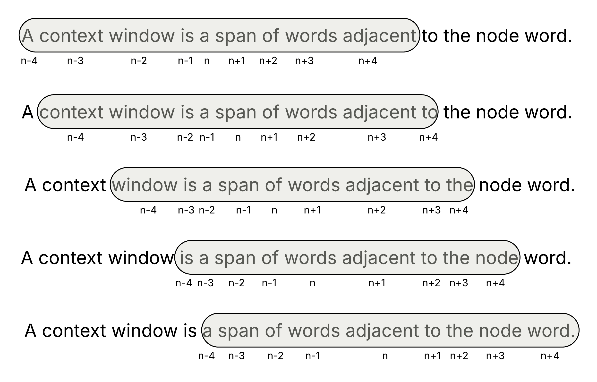
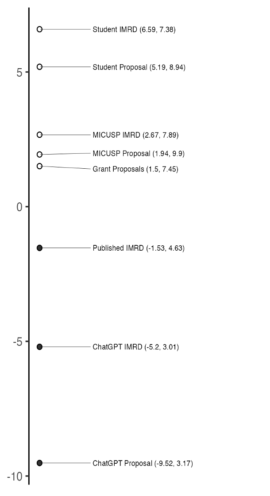
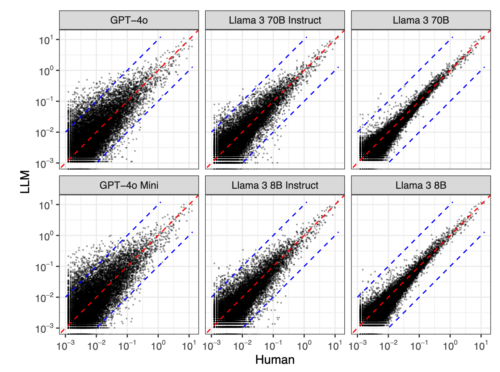
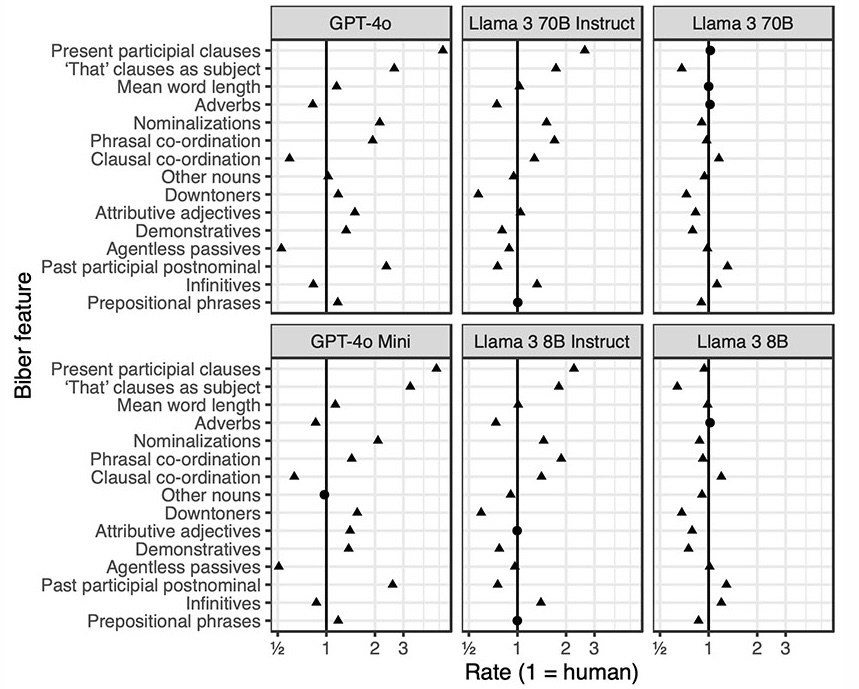

title: “AI’s Linguistic Fingerprint:
Key Stylistic Differences between AI-Generated Text and Human Writing” author: “Ben Markey” institute: Carnegie Mellon University title-slide-attributes: data-background-image: /AI_fingerprint_files/figs/background.png data-background-opacity: “0.5” embed-resources: true self-contained-math: true project: type: presentation output-dir: docs website: title: “AI’s Linguistic Fingerprint” page-navigation: true format: revealjs: css: “custom.css” theme: simple transition: none slide-number: true progress: true filters: - highlight-text lightbox: true
A little bit of forecasting
- Contextualizing this research
- A brief overview of LLMs
- Linguistic differences between humans and AI
Part 1: Contextualizing Research
This work comes from an interdisciplinary research group of statisticians and linguists
Since late 2022, our work has largely focused on AI writing patterns across different genres.
Part 2: A Brief Overview of LLMs
With some fancy math, context windows help establish numerical representations of word meaning

Once the model is up and running, engineers fine-tune it for specific tasks

Part 3: Salient differences between human writing and AI-genefared text
AI-generated prose is informationally dense
By closely analyzing the language features, narrative structures, and communication strategies employed in these genres, we aim to discern how they reflect the values, goals, and reading purposes of their respective discourse communities, offering valuable insights into the role of language in shaping public understanding and academic inquiry in the realm of social media.
AI-generated prose is informationally dense
By closely analyzing the language features, narrative structures, and communication strategies employed in these genres, we aim to discern how they reflect the values, goals, and reading purposes of their respective discourse communities, offering valuable insights into the role of language in shaping public understanding and academic inquiry in the realm of social media.
Key: head noun
AI-generated prose is informationally dense
By closely analyzing the language features, narrative structures, and communication strategies employed in these genres, we aim to discern how they reflect the values, goals, and reading purposes of their respective discourse communities, offering valuable insights into the role of language in shaping public understanding and academic inquiry in the realm of social media.
Key: head noun, object of prepositional phrase
AI-generated prose is informationally dense
By closely analyzing the language features, narrative structures, and communication strategies employed in these genres, we aim to discern how they reflect the values, goals, and reading purposes of their respective discourse communities, offering valuable insights into the role of language in shaping public understanding and academic inquiry in the realm of social media.
Key: head noun, object of prepositional phrase, prenominals
AI-generated prose is informationally dense
By closely analyzing the language features, narrative structures, and communication strategies employed in these genres, we aim to discern how they reflect the values, goals, and reading purposes of their respective discourse communities, offering valuable insights into the role of language in shaping public understanding and academic inquiry in the realm of social media.
Key: head noun, object of prepositional phrase, prenominal, attributive adjective
The information density in academic writing is different in degree, not kind.
The reduction in global mortality associated with vaccinations is second only to the introduction of safe drinking water. According to the World Health Organization, childhood vaccinations prevent an estimated 2–3million deaths per year. Yet despite global increases in childhood vaccine uptake, rates remain sub-optimal (<95%) with vaccine-preventable diseases still posing a public health risk.
Key: head noun, object of prepositional phrase, prenominal, attributive adjective
It isn’t just about nouns though. Look at how repetition helps this passage cohere.
The reduction in global mortality associated with vaccinations is second only to the introduction of safe drinking water. According to the World Health Organisation, childhood vaccinations prevent an estimated 2–3million deaths per year. Yet despite global increases in childhood vaccine uptake, rates remain sub-optimal (<95%), with vaccine-preventable diseases still posing a public health risk.
It isn’t just about nouns though. Look at how repetition helps this passage cohere.
The reduction in global mortality associated with vaccinations is second only to the introduction of safe drinking water. According to the World Health Organisation, childhood vaccinations prevent an estimated 2–3million deaths per year. Yet despite global increases in childhood vaccine uptake, rates remain sub-optimal (<95%), with vaccine-preventable diseases still posing a public health risk.
Writers also concretize abstractions to build cohesion
The reduction in global mortality associated with vaccinations is second only to the introduction of safe drinking water. According to the World Health Organisation, childhood vaccinations prevent an estimated 2–3million deaths per year. Yet despite global increases in childhood vaccine uptake, rates remain sub-optimal (<95%), with vaccine-preventable diseases still posing a public health risk.
Writers also concretize abstractions to build cohesion
The reduction in global mortality associated with vaccinations is second only to the introduction of safe drinking water. According to the World Health Organisation, childhood vaccinations prevent an estimated 2–3million deaths per year. Yet despite global increases in childhood vaccine uptake, rates remain sub-optimal (<95%), with vaccine-preventable diseases still posing a public health risk.
GPT does not employ any of these features
By closely analyzing the language features, narrative structures, and communication strategies employed in these genres, we aim to discern how they reflect the values, goals, and reading purposes of their respective discourse communities, offering valuable insights into the role of language in shaping public understanding and academic inquiry in the realm of social media.
These differences exist at-scale and across genres.

LLMs also use words at different rates relative to humans

These differences appear to be introduced in the fine-tuning stage

Unsurprisingly, we see student writing drifting toward a generated style

Works Cited
Colando, S. and and Franke, E. “Analyzing Statistics Students’ Writing Before and After the Emergence of Large Language Models.” Poster, US Conference on Teaching Statistics Research Satellite, July 2025.
Deluca, L., Reinhart, A., Weinberg, G., Laudenbach, M., Miller, S., and Brown, D. W. (2025). Developing students’ statistical expertise through writing in the age of AI. Journal of Statistics Education, 33(3), 266–278.
Markey, B., Brown, D. W., Laudenbach, M., and Kohler, A. (2024). Dense and disconnected: Analyzing the sedimented style of ChatGPT-generated text at scale. Written Communication, 41(7), 571-600.
Reinhart, A., Markey, B., Laudenbach, M., Pantusen, K., Yurko, R., Weinberg, G., & Brown, D. W. (2025). Do llms write like humans? variation in grammatical and rhetorical styles. Proceedings from the National Academy of Sciences, 122,e2422455122.